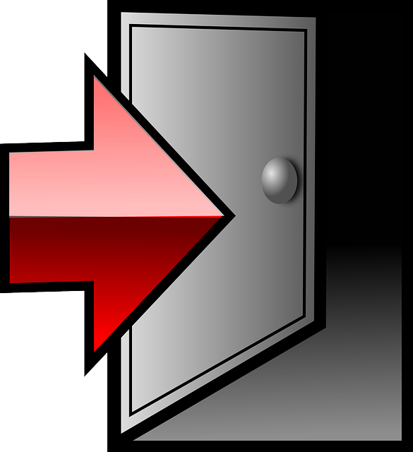

<section id="frontPageTopNavLeft">
	<article>
		<a href="frontPage.html" class="noneLink">
			
		</a>
	</article>
</section>
<section id="frontPageTopNavRight">
	<article>
		<a href="landing.html" class="noneLink">
			Logout
		</a>
	</article>
	<article>
		<a href="profilePage.html" class="noneLink">
			Open profile
		</a>
	</article>
</section>